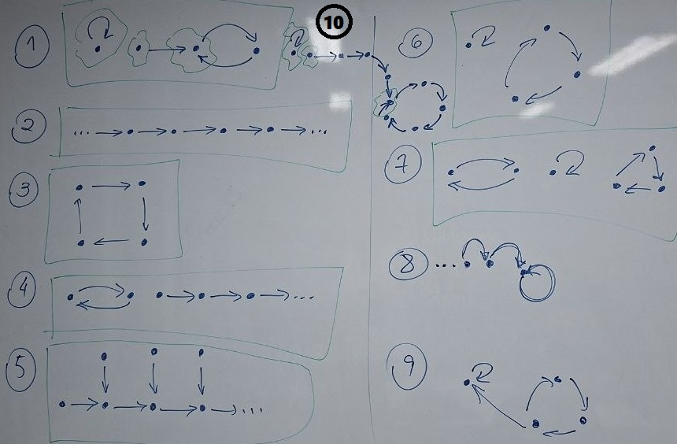

Turma L2, 2026-2 - Terças e quintas, 20-22h
Sala 304, bloco G, Gragoatá
Email da turma: analise_2026-2@id.uff.br (com a participação da professora)
Profa Renata de Freitas (renatafreitas@id.uff.br)
Atendimento: gabinete 45, 4o andar, ala C, bloco G, Gragoatá (com agendamento por email)
V1 - 10 questões, valendo 1 ponto cada, aplicadas no final das aulas de terça,
nos dias 11/8, 18/8, 25/8, 8/9, 15/9, 22/9, 6/10, 13/10, 20/10, 3/11.
V2 - 29 de setembro (terça)
V3 - 17 de novembro (terça)
2a chamada - 26 de novembro (quinta)
VS - 3 de dezembro (quinta)
Lembre que "fazer" exercícios é igual a "tentar fazer" exercícios, discutir com outras pessoas, e formular perguntas; e não é "ver a resolução" do exercício (no quadro, no caderno de outra pessoa, no gabarito, etc).
4/8/2026 - Axiomatização dos Números Naturais
- Leia as seções 1.1 e 1.2 do Capítulo 1 da apostila
Fundamentos de Análise Matemática
e faça as atividades 1.1 até 1.5 (páginas 20 a 23).
6/8/2026 - Axiomatização dos Números Naturais
- Na figura temos grafos direcionados (digrafos) e, em seguida, conjuntos de afirmações.
Os pontos de cada digrafo representam os elementos de um conjunto N e as setas representam a lei de associação de uma relação s de N em N.
Para cada conjunto de afirmações, identifique os digrafos que verificam todas as afirmações do conjunto (como fizemos em sala).

13/8/2026 - Axiomatização dos Números Naturais
- Justifique as suas respostas dos exercícios do dia 6/8/2026.
- Justifique também as suas respostas da
Questão 1 da V1.
- Resolva os exercícios da Lista 1.
- Resolva os exercícios da Lista 2.
- Faça a Atividade 1.7 do Capítulo 1 da apostila
Fundamentos de Análise Matemática.
- (Opcional) Para quem quiser mais sobre o Métodos de Prova por Indução:
textos e exercícios podem ser encontrado na Parte 3 do curso de
[LNF].
- (Opcional) Para quem quiser mais sobre métodos de prova:
* Livro:
Renata de Freitas e Petrucio Viana,
Métodos de Prova,
Minicurso do II Colóquio de Matemática da Região Sul, Universidade Estadual de Londrina, 2012.
* Vídeos do minicurso Comentários sobre Métodos de Prova,
X Semana da Matemática do IME-UFF, 2021:
[aula 1 - parte 5]
(Método de Suposição),
[aula 2 - parte 1]
(Método de Generalização),
[aula 2 - parte 2]
(Método de Redução ao Absurdo),
[playlist - minicurso completo].
-->
18/8/2026 - Infinitos infinitos
- Leia a última seção do seguinte texto sobre funções:
[pdf]
- Leia as seções 2.1 a 2.3 do Capítulo 2 da apostila
Fundamentos de Análise Matemática I.
20/8/2026 - Infinitos infinitos
- Leia o seguinte texto sobre o Hotel de Hilbert:
[pdf]
- Leia a Seção 2.4 do Capítulo 2 da apostila
Fundamentos de Análise Matemática I.
- Resolva os exercícios da Lista 2.
- (Opcional) Para quem quiser ler mais sobre cardinalidade:
* Capítulo 13 - Teorema de Cantor, do livro
Renata de Freitas e Petrucio Viana,
Introdução à Prática Matemática,
IME-UFF, Niterói, 2024.
* Alex Bellos, Alex no País dos Números - Uma Viagem ao Mundo Maravilhoso da Matemática, Companhia das Letras, São Paulo, 2011,
pp. 424-436 (sobre o Hotel de Hilbert).
* Paul Cohen, o matemático que criou 'novos mundos' ao resolver um problema - BBC News Brasil.